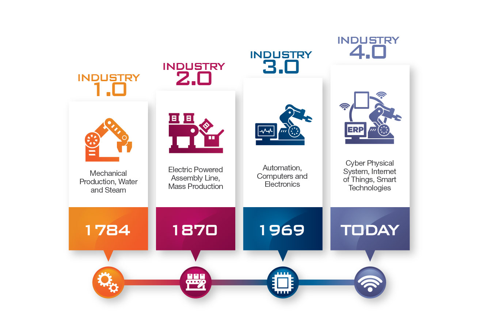

Eye of Hawk
Industry 4.0

Vignesh Chinnasamy
@Viknesh7013
Posts - 310
Followers - 489
Following - 83
Likes - 533
Dislikes - 15
Eye of Hawk .
The History Behind Industry 4.0
The industrial revolution in the digital era
"We are shifting from scale to the goal": the fourth industrial revolution is defined by this sentence and represents a radical change for companies. The attention is no longer directed towards the mass of consumers, but rather to the individual buyer, who determines the dynamics of production with his choices. Industry 4.0 is based on the technologies behind digital manufacturing, which must be adopted by companies in order to obtain all the advantages of this phenomenon. Let's remember, for example, digital technologies, Internet of Things (IoT), Big Data, Cloud Computing and Robotics.
The First Industrial Revolution
The industrial revolution in Britain came in to introduce machines into production by the end of the 18th century (1760-1840). This included going from manual production to the use of steam-powered engines and water as a source of power. This helped agriculture greatly and the term “factory” became a little popular. One of the industries that benefited a lot from such changes is the textile industry, and was the first to adopt such methods. It also constituted a huge part of the British economy at the time.
The Second Industrial Revolution
The second one dates between 1870 and 1914 (although some of its characteristics date back to the 1850) and introduced pre-existing systems such as telegraphs and railroads into industries. Perhaps the defining characteristic of that period was the introduction of mass production as a primary means to production in general.
The electrification of factories contributed hugely to production rates. The mass production of steel helped introduce railways into the system, which consequently contributed to mass production. Innovations in chemistry, such as the invention of the synthetic dye, also mark such period as chemistry was in a rather primitive state then.
However, such revolutionary approaches to industry were put to an end with the start of World War I. Mass production, of course, was not put to an end, but only developments within the same context were made and none of which can be called industrial revolutions.
The Third Industrial Revolution
Perhaps the third one is much more familiar to us than the rest as most people living today are familiar with industries leaning on digital technologies in production. However, the third industrial revolution is dated between 1950 and 1970.
It is often referred to as the Digital Revolution, and came about the change from analog and mechanical systems to digital ones. Others call it the Information Age too. The third revolution was, and still is, a direct result of the huge development in computers and information and communication technology.
The Fourth Industrial Revolution
The fourth industrial revolution takes the automation of manufacturing processes to a new level by introducing customized and flexible mass production technologies. This means that machines will operate independently, or cooperate with humans in creating a customer-oriented production field that constantly works on maintaining itself. The machine rather becomes an independent entity that is able to collect data, analyze it, and advise upon it.
This becomes possible by introducing self-optimization, self-cognition, and self-customization into the industry. The manufacturers will be able to communicate with computers rather than operate them.